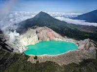
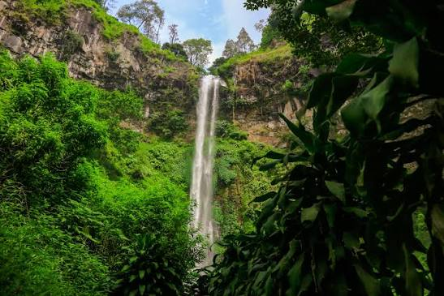

JELAJAH WISATA INDONESIATemukan Keindahan Alam dan Budaya Indonesia |
| Beranda | Wisata | Galeri |
selamat datang di website Jelajah Wisata Indonesia. Website ini berisi informasi mengenai beberapa tempat. Wisata menarik yang ada di Indonesia.
Indonesia memiliki banyak sekali destinasi wisata, mulai dari pegunungan,pantai,laut hingga wisata budaya
Gunung BromoGunung Bromo merupakan salah satu tempat wisata |
 Kawah IjenKawah Ijen merupakan salah satu tempat wisata terkenal yang. |
 Air Terjun Cuban RondoAir Terjun Cuban Rondo merupakan salah satu tempat wisata |
Silakan dengarkan musik berikut sambil menikmati Informasi Wisata Indonesia
Silakan melihat video berikut sambil menikmati informasi wisata indonesia
contact person zaky (X RPL 3)